Rabarbar
Posiada wiele wartości odżywczych. Jest źródłem witamin C, E, A, fosforu, potasu. Duża ilość błonnika wspomaga trawienie, pomaga przy wzdęciach, poprawia mikroflorę jelitową. Ma własćiwości przeciwzapalne i przeczyszczające. Rabarbar zawiera duże ilości kwasu szczawiowego, więc nie powinien być spożywany w nadmiernej ilości.
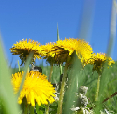
Mniszek lekarskiWykazuje działanie przeciwkaszlowe, przeciwzapalne, wspomaga w infekcjach dróg oddechowych, wzmacnia odporność. Wpływa na pracę wątroby, woreczka żółciowego, przyśpiesza gojenie się ran, łagodzi dolegliwości skórne. Nie jest wskazany dla osób chorujących na wrzody żołądka i nadkwaśność.
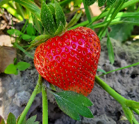
TruskawkaTo przede wszystkim źródło witaminy C oraz szeregu witamin z grupy B. Zawiera również bogactwo składników mineralnych - głównie potasu, wapnia, magnezu i żelaza przez co ma działanie odkwaszające. Chroni przed chorobami serca, stymuluje pracę wątroby i woreczka żółciowego. Dzięki zawartości pektyny usprawnia pracę jelit, reguluje trawienie. Truskawka doskonale poprawia konydcję skóry.
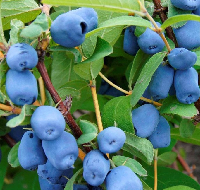
Jagoda kamczackaWykazuje działanie antyseptyczne, antywirusowe i antybakteryjne. Nazwyana jest jagodą długiego życia i dobrego wzroku. Pozwala odbudować odporność po przebytych chorobach. Poprawia pamięć, zmniejsza stres oksydacyjny, wzmacnia organizm i wspomaga trawienie. Redukuje ryzyko chorób układu krążenia, zawału serca, miażdżycy, otyłości, cukrzycy. Zalecana przy awitaminozie, zawiera witaminę C, A, P, E, kompleks wiamin B,magnez, potas, sód, wapń, fosfor, miedź, krzem, jod. Korzystnie wpływa na wzrok i ostrość widzenia, łagodzi stany zapalne oczu, spowalnia rozwój jaskry. Łagodzi skutki uboczne chemioterapii.
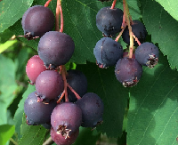
ŚwidośliwaZawiera mnóstwo witaminy C, pozytywnie wpływa na układ odpornościowy, obecny w niej kolagen pozwala zachować młody wygląd skóry. Zawiera wapń, który wzmacnia zęby i kości, potas, który obniża ryzyko chorób serca, błonnik, który zapobiega zaparciom. Ułatwia usuwanie toksyn z przewodu pokarmowego. Zmniejsza ryzyko wystąpienia hemoroidów.
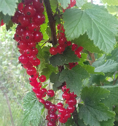
Czerwona porzeczkaZawartość błonnika skutecznie pomaga podczas zaparć, dolegliwości żołądkowo-jelitowych, wspomaga trawienie. Duża zawartość witamin poprawia odporność organizmu i zapobiega przeziębieniom. Zawiera witaminę C, PP, żelazo. Poprawia kondycję włosów, paznokci, dlatego polecana jest osobom z cerą tłustą i trądzikową. Wspomaga układ krążenia, obniża ciśnienie krwi. Nie wskazana jest osobom z zapaleniem żołądka, wrzodami, zakrzepicą.
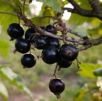
Czarna porzeczkaObecność rutyny sprawia, że witamina C jest doskonale wchłaniana, korzystnie wpływa na układ odpornościowy. Ma działanie wzmacniające przy przeziębieniach, dodaje sił witalnych. Wspomaga rekonwalescencję po przebytych chorobach. Zawiera flawonoidy, które spowalniją proces starzenia, obniżają poziom cholesterolu, wzmacniają i uszczelniają ściany naczyń krwionośnych, nie pozwalając na powstawanie pajączków, żylaków i siniaków. Hamuje rozwój miażdżycy i stabilizuje ciśnienie tętnicze. Ma własćiwości moczopędne i oczyszczające drogi moczowe. Łagodzi dolegliwości żołądkowe i wspomaga trawienie.
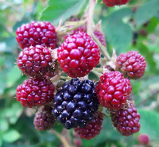
JeżynaStanowi cenne źródło potasu, który jest potrzebny do prawidłowego funkcjonowania serca i układ krwionośnego. Zawartość wapnia i fosforu wzmacnia kości i zęby. Zawiera magnez, ktróy reguluje ciśnienie krwi, wspomaga pracę mózgu, poprawia koncentrację, pamięć oraz jakość snu. Witamina A korzystnie wpływa na wzrok, pomaga zachować dobry stany skóry, włosów i paznokci.
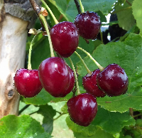
WiśniaZawiera dużo antyoksydantów, które spowalniają procesy starzenia, przedłużają sprawność fizyczną i psychiczną. Obniża poziom złego cholesterolu, zmniejsza ryzyko chorób układu krążenia, obniża krzepliwość krwi - doskonała dla osób po zawale, udarze. Wyrównuje pracę serca. Zawiera kumazynę, któa wraz z tłuszczami lub alkoholem (wiśniówka) działa uspokajająco, rozkurczowo na mięśnie gładkie, przeciwbólowo i przeciwgorączkowo. Hamuje rozwój bakterii i wirusów. Wzmacnia aptetyt i przemianę materii, zapobiega anemii. Wiśni nie powinny jeść osoby z wrzodami żołądka, dwunastnicy, chorzy na cukrzycę typu II.
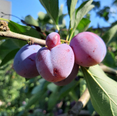
ŚliwkaDzięki dużej zawartości pektyn regulują trawienie, zapobiegają zaparciom, budują mikroflorę jelitową, chronią jelito grube przed chorobą nowotworową. Bogato źródło witamin z grupy B usprawnia pracę mózgu oraz całego układu nerwowego. Witamina K odpowiada za krzepliwość krwi i elastyczność naczyń krwionośnych.
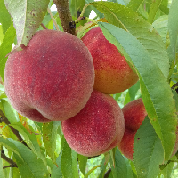
BrzoskwiniaOwoce składają się z 90% wody, dzięki czemu działają moczopędnie i oczyszczają organizm z toksyn. Wspomagają układ moczowy i nerki, Zawartość baru pomaga pozbyć się dokuczliwych objawów menopauzy.
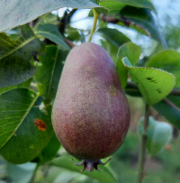
GruszkaDuża zawartość błonnika i kwasów owocowych reguluje trawienie i wypełnia żołądek - przedłużając uczucie sytości po posiłku. Gruszki jako jedne z nielicznych owoców zawierają jod - pierwiastek wspomagający pracę tarczycy. Zawartość boru poprawia koncentrację i pracę mózgu. Zawiera wiele witamin i składników mineralnych, takich jak: witaminy A, C, PP, kompleks witamin z grupy B, żelazo, potas, fosfor, wapń, magnez, sód.
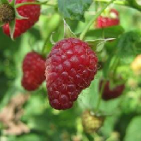
MalinaZawiera kwasy salicylowy, który działaniem przypomina aspirynę. Działa rozgrzewająco i napotnie, dzięki czemu pomaga w zwalczaniu gorączki w przebiegu wirusowych i bakteryjnych chorób. Wzmacnia układ odpornościowy. Wspomaga leczenie anemii. Neutralizuje działanie wolnych rodników - opóźnia procesy starzenia. Maliny zawierają dużo substancji odżywczych takich jak: potas, wapń, magnez, żelazo. Świetnie uzupełniają wszelkie niedobory witamin z grupy B, kwasu foliowego, witaminy C.
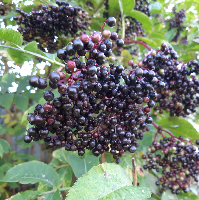
Czarny bezZarówno kwiaty jak i owoce oczyszczają organizm z toksyn i szkodliwych produktów przemiany materii. Wykazują właściwości wspomagające przy infekcjach górnych dróg oddechowych, skutecznie wzmacniają organizm i wspierają odporność. Mają właściwości napotne, przeciwgorączkowe, przeciwzapalne, wykrztuśne i moczopędne.
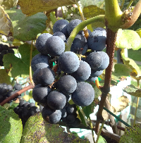
WinogronWinogrona są bogate w witaminy C, A, E, K, B a takźe minerały, takie jak miedź, żelazo, magnez, fosfor, potas, sód, cynk, mangan, selen i fluor. To solidne połączenie doskonale wpływa na elastyczność i jędrność skóry, cera zyskuje ładny i zdrowy koloryt. Zawierają jod, dzięki czemu wspomagają funkcjonowanie tarczycy. Zawiera flawonoidy, są to naturalne antyoksydanty, które wymiatają z organizmu wolne rodniki, odpowiedzialne za rozwój chorób nowotworowych i procesów starzenia.
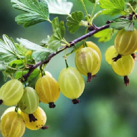
AgrestZawiera błonnik, kwas jabłkowy i cytrynowy, które wspomagają trawienie i poprawiają apetyt. Witamina C wzmacnia układ odpornościowy. Magnez oraz witaminy z grupy B mają pozytywny wpływ na układ nerwowy.
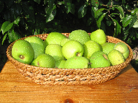
PigwowiecDzięki zawartości witamin C, B, PP, A oraz kwasów organicznych- jabłkowy i cytrynowy, wspiera odporność organizmu, pomaga w walce z wirusami w okresie przeziębień. Duża zawartość pektyn ogranciza wchłanianie cukrów z pożywienia, dlatego poprawia procesy trawienne i przemianę materii, pobudza apetyt, łagodzi zaparcia.
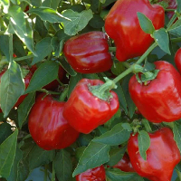
PaprykaStanowi cenne źródło witaminy C, witamin z grupy B oraz związków mineralnych: magnezu, żelaza, potasu, wapnia. Pozytywnie wpływa na nasz układ pokarmowy, wspomaga procesy trawienie, pobudza wydzielanie soku żołądkowego oraz poprawia apetyt. Papryka to jedno z nielicznych warzyw, które nie traci swoich własćiwości pod wpływem obróbki termicznej.
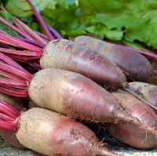
Burak czerwonyDzięki zawartości witaminy B1 pozytywnie wpływa na układ krwionośny i mięśniowy. Wspomaga funkcjonowanie mózgu i poprawia pamięć. Pomaga w walce z nadwagą, obniża poziom cholesterolu.
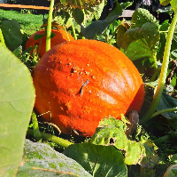
DyniaJest bogata w cynk i witaminę C, które wzmacnianją układ odpornościowy. Pomaga likwidować zaparcia, regulure przemianę materii. Jest warzywem lekkostrawnym. Beta-karoten obniża poziom złego cholesterolu, reguluje ciśnienie tętnicze, zapewnia prawidłowe funkcjonowanie wzroku, zwłaszcza o zmierzchu.
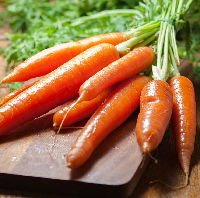
MarchewZawartość błonnika wspiera układ trawienny, reguluje pracę jelit, zapobiega zaparciom. Bardzo bogata w beta-karoten, który jest niezbędny dla zdrowia oczu. Witamina A i C poprawia wygląd skóry i odporność organizmu.
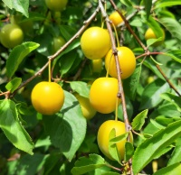
MirabelkaZapomniany owoc. Zawiera pektyny i sorbitol czyli alkohol, który ma działanie przeczyszczające. Obniża ciśnienie krwi i poziom złego cholesterolu. Zmniejsza reakcje alergiczne. Przeciwdziała anemii i osteoporozie.
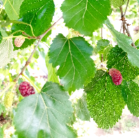
Morwa białaSubstancje zawarte w morwie, odgrywają istotną rolę w profilaktyce chorób cywilizacyjnych takich jak otyłość, nadciśnenie tętnicze. Reguluje poziom cholesterolu, obniża cukier we krwi. Ponadto działa również przeciwbakteryjnie, przeciwgrzybiczo i przeciwwirusowo.
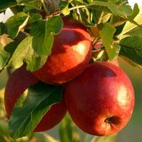
JabłkoPomagają obniżyć poziom tzw. "złego cholesterolu". Zwiększają uczucie sytości, dzięki czemu przyczyniają się do utraty wagi. Regulują pracę przewodu pokarmowego, przeciwdziałają zaparciom. Jabłka to idealny zamiennik słodkich przekąsek.
Mirabelka
Zawierają pektyny i sorbitol, czyli alkohol, któy ma działanie przeczyszczające. Wspomagają odchudzanie, przeciwdziałają miażdżycy, poprawiają krążenie krwi. Łagodzą stany zapalne w organiźmie, uelastyczniają i poprawiają kondycję skóry.